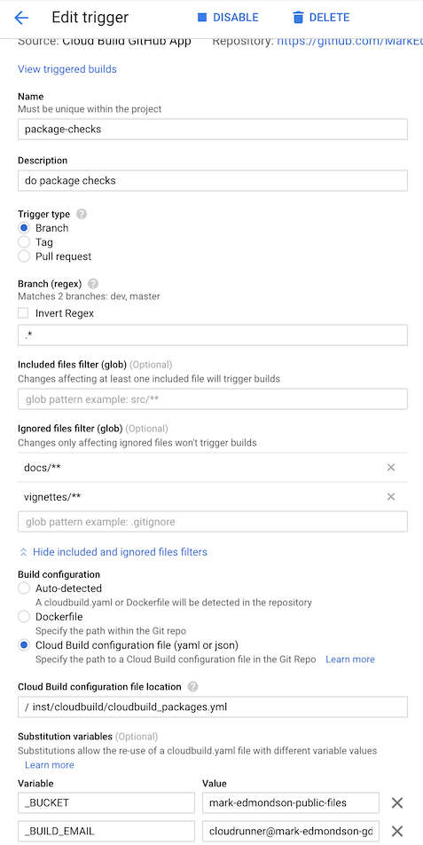

Serverless batched R scripts via Cloud Build
2022-03-26
Source:vignettes/cloudbuild.Rmd
cloudbuild.RmdCloud Build uses Docker
containers to run everything. This means it can run almost any
language/program or application including R. Having an easy way to
create and trigger these builds from R means R can serve as a UI or
gateway to any other program e.g. R can trigger a Cloud Build using
gcloud to deploy Cloud Run applications.
The first 120 mins per day are free. See here for more priceinfo.
If you want to run scripts that can be triggered one time, batch style, and set them up to trigger on GitHub events or pub/sub, or schedule them using Cloud Scheduler then Cloud Build is suited to your use case.
If you would also like to have your R code react in real-time to events such as HTTP events, such as a website or API endpoint, consider Cloud Run.
PubSub events can also trigger builds via Build Triggers which is good for long-running tasks in reaction to events such as a Cloud Storage file being uploaded, various events around Google Cloud such as billing alerts and via custom metrics set up in Cloud Logging for practically any logged event on Google Cloud.
An overview of the various functions and how they combine with each other and later functions is shown in this diagram:

The cloudbuild.yaml format
Cloud Build is centered around the cloudbuild.yaml format - you can use existing cloudbuild.yaml files or create your own in R using the cloudbuild.yaml helper functions.
An example cloudbuild.yaml is shown below - this outputs the versions of docker and echos “Hello Cloud Build” and calls an R function:
steps:
- name: 'gcr.io/cloud-builders/docker'
id: Docker Version
args: ["version"]
- name: 'alpine'
id: Hello Cloud Build
args: ["echo", "Hello Cloud Build"]
- name: 'rocker/r-base'
id: Hello R
args: ["R", "-e", "paste0('1 + 1 = ', 1+1)"]This cloudbuild.yaml file can be built directly via the
cr_build() function. The build will by default trigger a
website URL to open with the build logs.
b1 <- cr_build("cloudbuild.yaml")Or you can choose to wait in R for the build to finish, like below:
b2 <- cr_build("cloudbuild.yaml", launch_browser = FALSE)
b3 <- cr_build_wait(b2)
# Waiting for build to finish:
# |===||
# Build finished
# ==CloudBuildObject==
# buildId: c673143a-794d-4c69-8ad4-e777d068c066
# status: SUCCESS
# logUrl: https://console.cloud.google.com/gcr/builds/c673143a-794d-4c69-8ad4-e777d068c066?project=1080525199262
# ...You can export an existing build into a cloudbuild.yaml file, for instance to run in another project not using R.
cr_build_write(b3, file = "cloudbuild.yml")Constructing Cloud Build objects
There are several layers to creating Cloud Build objects in R:
-
cr_build()triggers the API with Cloud Build objects and cloudbuild.yaml files -
cr_build_yaml()lets you create the Cloud Build objects in R and can write to .yaml files. -
cr_build_make()creates Cloud Build R objects directly from .yaml files -
cr_buildstep()lets you create specific steps within the Cloud Build objects. There are helper template files with common tasks such ascr_buildstep_r()
For common use cases the cr_deploy_* functions use the
above functions with some sensible defaults to quickly run use cases for
you:
-
cr_deploy_docker()- builds from a Dockerfile then pushes the Docker image to Google Container Registry -
cr_deploy_docker_trigger()- as above, plus creating a build trigger so the build will run upon each git commit - see the Docker image use case for both. -
cr_deploy_packagetests()- create a build that will run R package unit tests and a build trigger to run them upon each commit - see the package tests and code coverage use case -
cr_deploy_pkgdown()- create a build that will deploy an R package website and a build trigger to create it upon each commit - see the pkgdown website use case. -
cr_deploy_run_website()- take HTML you have in a folder (perhaps created from an RMarkdown file) and deploy it to a nginx website on Cloud Run -
cr_deploy_r()- take the R script you supply and run it within a Cloud Build. Optionally also schedule that R script - see the R code on a schedule use case. -
cr_deploy_run()- takes a local folder, builds the Docker image suitable for Cloud run and deploys to Cloud Run. Variants includecr_deploy_plumber()to R plumber APIs andcr_deploy_html()for nginx websites. See the R micro-services, trigger R functions from pub/sub and creating a Slackbot use cases
Some of the above are also available in an RStudio gadget.
The deploy functions call the underlying cloud build functions, so if they don’t suit you can also customise by using those. An overview on what the deploy functions use is below:

Docker images to use in Cloud Build
Any utility that has a Docker image can be used within Cloud Build steps.
Official Google images for the gcloud, bq
and gsutil are here: https://github.com/GoogleCloudPlatform/cloud-sdk-docker
Some community
contributed Cloud Build images are listed here, including hugo,
make,
and tar,
or you can configure your own Dockerfile and build what image you need
yourself, perhaps by using a previous Cloud Build and
cr_deploy_docker()
Cloud Build source
Cloud Builds sometimes need code or data to work on to be useful.
All cloudbuilds are launched in a serverless environment with a
default directory /workspace/. The Source is copied into
this workspace before the build steps execute, so steps can share state
and files. Cloud Build sources are specified by the source
argument.
A source can be a Cloud Source Repository (perhaps mirrored from GitHub) or a Cloud Storage bucket containing the code/data you want to operate on. An example of specifying both is below:
gcs_source <- cr_build_source(
StorageSource("gs://my-bucket", "my_code.tar.gz"))
repo_source <- cr_build_source(
RepoSource("github_markedmondson1234_googlecloudrunner",
branchName="master"))
build1 <- cr_build("cloudbuild.yaml", source = gcs_source)
build2 <- cr_build("cloudbuild.yaml", source = repo_source)cr_build_upload_gcs() is a helper function for
automating creation of a Google Cloud Storage source - this uses googleCloudStorageR
to tar and upload your source code locally to your bucket, making it
available to your build.
This returns a Source object that can be used in build
functions:
storage <- cr_build_upload_gcs("my_folder")
cr_build(my_yaml, source = storage)By default this will place your local folder’s contents in the
/workspace/deploy/ folder. For buildsteps to access those
files you may want to add dir="deploy" to them so they will
have their working directory start from there, but to be more consistent
with Build triggers (that always use sources in the root
/workspace directory) a helpful build step can move that
deploy folder into root - see cr_buildstep_source_move()
which is intended to be the first buildstep of a build in those
situations you want to move deploy folders.
Cloud Build default substitutions
Cloud Builds can use reserved default substitutions to help with deployments in a continuous development situation. For instance, files can be named according to the Git branch they are committed from. These are listed in Google docs here and reproduced below:
- $PROJECT_ID: the project ID of the build.
- $BUILD_ID: the autogenerated ID of the build.
- $REPO_NAME: the source repository name specified by RepoSource.
- $LOCATION: the region of your build
- $BRANCH_NAME: the branch name specified by RepoSource.
- $TAG_NAME: the tag name specified by RepoSource.
- $REVISION_ID or $COMMIT_SHA: the commit SHA specified by RepoSource or resolved from the specified branch or tag.
- $SHORT_SHA: first 7 characters of $REVISION_ID or $COMMIT_SHA.
- $TRIGGER_BUILD_CONFIG_PATH: path to the build config file, by default /cloudbuild.yaml
There are also some GitHub specific substitutions, used mostly in Build Triggers we detail later on.
- $_HEAD_BRANCH : head branch of the pull request
- $_BASE_BRANCH : base branch of the pull request
- $_HEAD_REPO_URL : url of the head repo of the pull request
- $_PR_NUMBER : number of the pull request
Custom macros can also be configured, starting with _$ e.g. $_MY_CUSTOM_MACRO - see the Google help files on how to handle those.
Creating cloudbuild.yml build steps
Instead of using separate cloudbuild.yml files, you can
also choose to make your own cloudbuild.yaml files in R via
cr_build_yaml() and cr_buildstep()
Lets say you don’t want to write a cloudbuild.yaml file manually - instead you can create all the features of the yaml files in R. Refer to the cloudbuild.yml config spec on what is expected in the files or functions.
An example below recreates a simple cloudbuild.yml file. If you print it to console it will output what the build would look like if it was in a yaml file:
cr_build_yaml(steps = cr_buildstep( "gcloud","version"))
#==cloudRunnerYaml==
#steps:
#- name: gcr.io/cloud-builders/gcloud
# args: versionYou can write back out into your own cloudbuild.yml
my_yaml <- cr_build_yaml(steps = cr_buildstep( "gcloud","version"))
cr_build_write(my_yaml, file = "cloudbuild.yaml")And also edit or extract steps from existing cloudbuild.yml files via
cr_buildstep_edit() and
cr_buildstep_extract().
This allows you to programmatically create cloudbuild yaml files for other languages and triggers. See more at this article on creating custom build steps with your own Docker images.
Pre-made Build Step templates
Using the above build step editing functions, some helpful build steps you can use in your own cloudbuild steps have been included in the package.
-
cr_buildstep_gcloud()- an optimised docker forgcloud,bq,gsutilorkubectlcommands -
cr_buildstep_bash()- for including bash scripts -
cr_buildstep_docker()- for building and pushing Docker images -
cr_buildstep_secret()- storing secrets in the cloud and decrypting them -
cr_buildstep_decrypt()- for using Google Key management store to decrypt auth files -
cr_buildstep_git()- for setting up and running git commands -
cr_buildstep_mailgun()- send an email with Mailgun.org -
cr_buildstep_nginx_setup()- setup hosting HTML files with nginx on Cloud Run -
cr_buildstep_pkgdown()- for setting up pkgdown documentation of an R package -
cr_buildstep_r()- for running R code -
cr_buildstep_slack()- send a Slack webhook message
If you have any requests for others, please raise an issue on GitHub.
Combine buildsteps with c() e.g.
cr_build_yaml(
steps = c(
cr_buildstep("ubuntu", "echo hello"),
cr_buildstep_gcloud("gcloud","version"),
cr_buildstep_docker("my-image", tag="dev"),
cr_buildstep_secret("my_secret","auth.json"),
cr_buildstep_r("sessionInfo()")),
images = "gcr.io/my-project/my-image")The cr_buildstep_* functions are all calling
cr_buildstep() with helpful defaults, for example these are
equivalent:
cr_buildstep_bash("echo hello world")
#[[1]]
#==cloudRunnerBuildStep==
#name: ubuntu
#args:
#- bash
#- -c
#- echo hello world
cr_buildstep("ubuntu", args = c("bash", "-c", "echo hello world"), prefix = "")
#[[1]]
#==cloudRunnerBuildStep==
#name: ubuntu
#args:
#- bash
#- -c
#- echo hello worldTo further aid deployments the cr_deploy_* functions
take some common tasks and use the buildsteps above, in some cases also
creating a build trigger or schedule.
Build Artifacts
You may have some useful files or data after your buildsteps run that
you want to use later. You can specify these files as
artifacts that will be uploaded to a Google Cloud
Storage bucket after the build finishes. A helper function
cr_build_artifacts() will take your build object and
download the files to your local directory via
googleCloudStorageR
r <- "write.csv(mtcars,file = 'artifact.csv')"
ba <- cr_build_yaml(
steps = cr_buildstep_r(r),
artifacts = cr_build_yaml_artifact('artifact.csv')
)
build <- cr_build(ba)
built <- cr_build_wait(build)
cr_build_artifacts(built)
# 2019-12-22 12:36:10 -- Saved artifact.csv to artifact.csv (1.7 Kb)
read.csv("artifact.csv")
# X mpg cyl disp hp drat wt qsec vs am gear carb
#1 Mazda RX4 21.0 6 160.0 110 3.90 2.620 16.46 0 1 4 4
#2 Mazda RX4 Wag 21.0 6 160.0 110 3.90 2.875 17.02 0 1 4 4
#3 Datsun 710 22.8 4 108.0 93 3.85 2.320 18.61 1 1 4 1
#4 Hornet 4 Drive 21.4 6 258.0 110 3.08 3.215 19.44 1 0 3 1
# ... etc ...Other common artifacts are Docker images that your build has created.
These are usually uploaded automatically to Container Registry, if say
you are using cr_deploy_docker().
Build Logs
You can view the logs of the build locally in R using
cr_build_logs() if you pass it a build object, such as from
cr_build_wait() (causes R to wait for build to finish) or
cr_build_status() (checks on build status)
s_yaml <- cr_build_yaml(steps = cr_buildstep( "gcloud","version"))
build <- cr_build_make(s_yaml)
built <- cr_build(build)
the_build <- cr_build_wait(built)
cr_build_logs(the_build)
# [1] "starting build \"6ce86e05-b0b1-4070-a849-05ec9020fd3b\""
# [2] ""
# [3] "FETCHSOURCE"
# [4] "BUILD"
# [5] "Already have image (with digest): gcr.io/cloud-builders/gcloud"
# [6] "Google Cloud SDK 325.0.0"
# [7] "alpha 2021.01.22"
# [8] "app-engine-go 1.9.71"
# ...RStudio Gadget - build Docker
If you are using RStudio, installing the library will enable an RStudio Addin that can be called after you have setup the library as per the setup page.
It includes a Shiny gadget that you can call via the Addin menu in
RStudio, via googleCloudRunner::cr_deploy_gadget() or
assigned to a hotkey (I use CTRL+SHIFT+D).
This sets up a Shiny UI to help smooth out deployments as pictured:

R buildsteps
Focusing on one buildstep in particular, since this is an R package -
you can send in R code into a build trigger using
cr_buildstep_r().
It accepts both inline R code or a file location. This R code is
executed in the R environment as specified in argument name
- they default to the R images provided by Rocker rocker-project.org.
If you want to build your own images (in perhaps another Cloud Build
using cr_deploy_docker()) you can use your own R images
with custom R packages and resources.
Some useful R images have been made you could use or refer to their Dockerfiles for:
-
gcr.io/gcer-public/packagetools- installs: devtools covr rhub pkgdown goodpractice httr plumber rmarkdown -
gcr.io/gcer-public/render_rmd- installs: pkgdown rmarkdown flexdashboard blogdown bookdown -
gcr.io/gcer-public/googlecloudrunner- installs: containerit, googleCloudStorageR, plumber, googleCloudRunner
The R code can be created within the Build at build time, or you can refer to an existing R script within the Source.
# create an R buildstep inline
cr_buildstep_r(c("paste('1+1=', 1+1)", "sessionInfo()"))
# create an R buildstep from a local file
cr_buildstep_r("my-r-file.R")
# create an R buildstep from a file within the source of the Build
cr_buildstep_r("inst/schedule/schedule.R", r_source = "runtime")
# use a different Rocker image e.g. rocker/verse
cr_buildstep_r(c("library(dplyr)", "mtcars %>% select(mpg)", "sessionInfo"),
name = "verse")
# use your own R image with custom R
my_r <- c("devtools::install()", "pkgdown::build_site()")
br <- cr_buildstep_r(my_r, name= "gcr.io/gcer-public/packagetools:latest")
# send it for building
cr_build(cr_build_yaml(steps=br))Build Triggers
Once you have build steps and possibly a source created, you can
either set these up to run on a schedule via cr_schedule()
or you can use triggers that will run upon certain events.
Setting up Build Triggers in the Web UI
The quickest way to get going is to use the web UI for Build Triggers
(https://console.cloud.google.com/cloud-build/triggers)
- Link your repo (GitHub, Bitbucket or Cloud Repositories) to Google
- Create your Cloud Build using
cr_build_yaml()etc. - Write out to a
cloudbuild.ymlfile in your repository (by default the root directory is checked) - Setup the Build Trigger in the Web UI
(
https://console.cloud.google.com/cloud-build/triggers) - Make a git commit and check the Cloud Build has run in the history
(
https://console.cloud.google.com/cloud-build/builds) - Modify the
cloudbuild.ymlfile as you need, recommit to trigger a new build.
Learn how to set them up at this Google article on creating and managing build triggers.
From there you get the option of connecting a repository either by mirroring it from GitHub/Bitbucket or using Cloud Source Repositories.
You can setup either Docker builds by just providing the location of
the Dockerfile, or have more control by providing a
cloudbuild.yml - by default these are looked for in the
root directory.
Here are some example for this package’s GitHub repo:

- The “do package checks” performs authenticated tests against the package
- The “git auth and push pkgdown website” rebuilds the website each commit to master branch.
- “Build a dockerfile for package builds” builds the
gcr.io/gcer-public/packagetoolsimage - “pushGoogleCloudRunnerToGcerPublic” builds the
gcr.io/gcer-public/googlecloudrunnerimage

Build Triggers via code
Once you know how to make Build Triggers in the Web UI, you may want
to move into doing them within R. This lets you scale quickly
applications and are using in some of the cr_deploy_*()
functions such as cr_deploy_docker_trigger().
Build Triggers can be made via R code using the
cr_buildtrigger() function.
Build Triggers can execute on some useful triggers:
- GitHub commits and pull requests
- PubSub triggers such as when a file hits Cloud Storage
- Webhook triggers responding to 3rd party applications
The example below shows how to set up some of the builds used in the examples above:
# get an existing cloudbuild.yaml file
cloudbuild <- system.file("cloudbuild/cloudbuild.yaml",
package = "googleCloudRunner")
# import the build into R
bb <- cr_build_make(cloudbuild, projectId = "test-project")
# specify the GitHub repo the trigger will react to
github <- cr_buildtrigger_repo("MarkEdmondson1234/googleCloudRunner", branch = "master")
# create the build trigger
cr_buildtrigger(bb, name = "trig1", trigger = github)This build trigger will then build upon each git commit.
Build substitutions can also be configured by them into the
substitutions argument:
# creates a trigger with named substitutions
ss <- list(`$_MYVAR` = "TEST1", `$_GITHUB` = "MarkEdmondson1234/googleCloudRunner")
# a buildtrigger with parametised substitutions
cr_buildtrigger("trig2", trigger = github, build = bb, substitutions = ss)The above examples will create the build step in-line within the trigger, but you can also specify cloudbuild.yaml files by specifying the path to where in the repository the build file will be:
# create a trigger that will build from the file in the repo
cr_buildtrigger("cloudbuild.yaml", name = "trig3", trigger = github)This way you can commit changes to the cloudbuild.yaml file, and they will be reflected in the Build Trigger.
Connecting to GitHub
You can connect via the Source Repository mirroring service or via the Google Cloud Build GitHub app - see the git setup page for more details.
Combining buildsteps from triggers with other builds
It may be you want to combine build steps from across buildtriggers. For example, you have a Docker build triggers and want to add some steps that use that Docker image after its been built.
You can extract the buildsteps from deployed buildtriggers to combine them and avoid having two builds.
For example, say you have deployed a Dockerfile trigger:
repo <- cr_buildtrigger_repo("your-github/your-repo")
# first time - by default will be called "docker-{image}"
cr_deploy_docker_trigger(repo, image = "my-build")If you want to extract the docker buildsteps you can find it in
dock_build$build$steps below:
# get the buildtrigger details
dock_build <- cr_buildtrigger_get("docker-my-build")
# contains the buildsteps from the deployment
dock_build$build$stepsYou can then combine those buildsteps in the usual way with other buildsteps. The example below assumes you’ve made an R docker image with some of your custom dependencies that you then want to immediately run your R code within:
# uses the docker image previously created
my_r_step <- cr_buildstep_r(r = "my_r_code.R", name = "docker-my-build")
# combine the buildsteps
new_buildsteps <- c(dock_build$build$steps, my_r_step)
# remake the build yaml
yml <- cr_build_yaml(new_buildsteps)You can then reconfigure the build trigger with your new build yaml. The below writes the yaml to a file to be read by the build trigger:
# write it out to the git repo we are in
cr_build_write(yml, "new_buildsteps.yml")
repo <- cr_buildtrigger_repo("your-github/your-repo")
# overwrite the deployed build trigger to read the yml
cr_buildtrigger(
"new_buildsteps.yml",
name = "docker-my-build",
trigger = repo,
overwrite = TRUE
)Pub/Sub Triggered Cloud Builds
You can configure your build triggers to run from PubSub events. These events are generated from a lot of different services around GCP, such as when a file hits Cloud Storage, when certain events occur in Cloud Logging, or when your budget alerts fire. Triggering a Cloud Build can allow complex workflows responding to these events, including picking up data from the PubSub message to parametrise your code via Substitutions.
See the Creating Pub/Sub triggers documentation on how to do this in the WebUI and gcloud.
Below is an example that uses googlePubSubR
to create and send a message to PubSub, but any other service that
publishes to PubSub could be used.
For this example, the substitution variables will take its data from
the PubSub message content. It will look within the
body.message.data.x variable, where x is the
field sent in the pubsub message. See how to use these payload
bindings in other ways at the Google documentation.
The cloud build yaml looks like:
steps:
- name: 'alpine'
id: Hello Cloud Build
args: ["echo", "Hello Cloud Build"]
- name: 'rocker/r-base'
id: Hello R
args: ["Rscript", "-e", "paste0('From PubSub message field1:', '${_VAR1}')"]
substitutions:
_VAR1: '$(body.message.data.var1)'Note _VAR1 which will be filled in with the
var1 field coming from the PubSub message.
# create build object
cloudbuild <- system.file("cloudbuild/cloudbuild_substitutions.yml",
package = "googleCloudRunner")
the_build <- cr_build_make(cloudbuild)
the_buildWe then create the topic if it does not exist already:
# create pub/sub topic if needed
library(googlePubsubR)
pubsub_auth()
topics_create("test-topic")We now use the function cr_buildtrigger_pubsub() to
construct the trigger for the Cloud Build.
# create build trigger that will work from pub/subscription
pubsub_trigger <- cr_buildtrigger_pubsub("test-topic")
cr_buildtrigger(the_build, name = "pubsub-triggered-subs", trigger = pubsub_trigger)
#==CloudBuildTriggerResponse==
#id: b7fb7d8d-534d-4408-9e0c-154be6577a7f
#name: pubsub-triggered-subs
#createdTime: 2021-11-26T21:39:23.714950565Z
#==CloudBuildObject==
#substitutions:
#_VAR1 : $(body.message.data.var1)
#steps:
#- name: alpine
# args:
# - echo
# - Hello Cloud Build
# id: Hello Cloud Build
#- name: rocker/r-base
# args:
# - Rscript
# - -e
# - paste0('From PubSub message field1:', '${_VAR1}')
# id: Hello RThe build trigger should now be deployed and available in your Cloud Console.
We now simulate a PubSub message coming in with the var1
field filled. In real applications this PubSub trigger could come from
another system, Cloud Storage files, or other R scripts.
PubSub requires the message to be JSON and base64 encoded, so we use
library(jsonlite) to do this and
library(googlePubsubR) again to send the message:
# make base64 encoded json
library(jsonlite)
message <- toJSON(list(var1 = "hello mum"))
send_me <- msg_encode(message)
# send the message!
topics_publish(PubsubMessage(send_me), "test-topic")You should now see the Cloud Build start in your GCP console. You can check the logs for the build after it has run to see if it worked:
# did it work?
cr_buildtrigger_logs("pubsub-triggered-subs")
# yep!
#...
#[55] "Step #1 - \"Hello R\": Status: Downloaded newer image for rocker/r-base:latest"
#[56] "Step #1 - \"Hello R\": docker.io/rocker/r-base:latest"
#[57] "Step #1 - \"Hello R\": [1] \"From PubSub message field1:[\\\"hello mum\\\"]\""
#[58] "Finished Step #1 - \"Hello R\""
#[59] "PUSH"
#[60] "DONE" See also cr_schedule_pubsub() which can use PubSub to
trigger scheduled builds. There is a guide using that within Cloud Scheduler to trigger Build Triggers via
Pubsub
Targets Integration
The targets
package is a data pipeline toolkit for R which allows for
reproducible workflows without having to run the entire pipeline each
time. You can use it to create a graph of dependencies (directional
acyclic graphs, or DAG).
It is convenient to have these pipelines run in the cloud and in a
serverless manner in particular which googleCloudRunner
facilitates via the cr_build_targets() function. Since the
pipeline can run in a Cloud Build, you do not need to have your local
machine on to run the pipeline. Cloud Build allows up to 24hrs timeout
values for the build, and costs are much lower than having a dedicated
computing cluster as you are only charged for the time the job is
running.
The integration looks through your existing targets
pipeline and creates the appropriate build steps for your build, reusing
the functions and target meta data in your local folder. By selecting to
run on Cloud Build, the local targets metadata folder is uploaded to
Cloud Storage, used to coordinate the different target pipeline steps
(targets) and then downloads the results back to your local
session.
The cr_buildsteps_targets() function is the base
buildstep you can use to create your workflows. Its more likely you will
use the cr_buildstep_targets_multi() function which will
use these buildsteps to create your pipeline, including trying to
optimise the running time as much as possible by setting up concurrent
execution if possible.
In general the integration takes care of these steps:
- Scan your system for the targets workflow
- Creates a Cloud Build yaml that will execute the workflow
- Uploads target metadata file (usually with
_targets/meta) to a Cloud Storage bucket - Executes the build, skipping any unnecessary steps and running concurrently if possible
- Uploads the results to Cloud Storage
- Downloads from Cloud Storage to your local session if required
You will need to create an R based Dockerfile to run the target
functions within, including at least targets and any other libraries you
need for your functions to execute. By default it will use
gcr.io/gcer-public/targets which is an image containing
targets only.
An overview of the targets functions is shown below:

Targets pipeline example
The below example shows a minimal use case of running the pipeline immediately:
write.csv(mtcars, file = "mtcars.csv", row.names = FALSE)
targets::tar_script(
list(
targets::tar_target(file1,
"mtcars.csv", format = "file"),
targets::tar_target(input1,
read.csv(file1)),
targets::tar_target(result1,
sum(input1$mpg)),
targets::tar_target(result2,
mean(input1$mpg)),
targets::tar_target(result3,
max(input1$mpg)),
targets::tar_target(result4,
min(input1$mpg)),
targets::tar_target(merge1,
paste(result1, result2, result3, result4))
),
ask = FALSE)
bs <- cr_buildstep_targets_multi()
# run it immediately in cloud
cr_build_targets(bs, execute="now")The target pipeline is represented by this DAG (generated by
targets::tar_visnetwork())

When you issue cr_buildstep_targets_multi() the targets
DAG is analysed and used to create the buildsteps:
bs <- cr_buildstep_targets_multi()
#ℹ 2022-01-20 15:26:56 > targets cloud location: gs://your-bucket/your-project
#ℹ 2022-01-20 15:26:56 > Resolving targets::tar_manifest()
#── # Building DAG: ───────────────────────────────────────────────────────────
#• [get previous _targets metadata] -> [file1]
#• [file1] -> [input1]
#• [input1] -> [result1]
#• [input1] -> [result2]
#• [input1] -> [result3]
#• [input1] -> [result4]
#• [result1, result2, result3, result4] -> [merge1]
#• [merge1] -> [ Upload Artifacts ]The [get previous _targets metadata] buildstep is
boilerplate generated by cr_buildstep_targets_setup(),
whilst [ Upload Artifacts ] is the one generated by
cr_buildstep_targets_teardown().
The DAG is created by populating the id and
waitFor arguments within a cr_buildstep().
These buildsteps could be used directly in cr_build() but
you would need to handle uploading the data sources etc. which is what
cr_build_targets() helps with.
Passing these buildsteps into cr_build_targets() allows
you to select execute="now" which will run the pipeline
immediately. execute="trigger" will only create the YAML
for you to use in constructing a buildstep.
cr_build_targets(bs, execute="now") will start off a
build like the below example:
cr_build_targets(bs, execute="now")
── # Uploading . to gs://your-buucket/.20220120152659.tar.gz ───────────────────────
ℹ 2022-01-20 15:27:00 > Tarring files in tmpdir:
• _pkgdown.yml
• _targets.R
• etc ...
...
ℹ Cloud Build started - logs:
<https://console.cloud.google.com/cloud-build/builds/17ce8d71-593c-44f0-8990-9a3192016b0f>
...
ℹ 2022-01-20 15:28:42 > targets cloud location: gs://your-bucket//your-local
ℹ 2022-01-20 15:28:42 > Downloading to download_folder: /your-local/_targets
✓ Saved /your-local/_targets/buildtime.txt to _targets/buildtime.txt ( 29 bytes )
✓ Saved /your-local/_targets/meta/meta to _targets/meta/meta ( 1 Kb )
✓ Saved /your-local/_targets/meta/process to _targets/meta/process ( 56 bytes )
✓ Saved /your-local/_targets/meta/progress to _targets/meta/progress ( 271 bytes )
✓ Saved /your-local/_targets/objects/input1 to _targets/objects/input1 ( 861 bytes )
✓ Saved /your-local/_targets/objects/merge1 to _targets/objects/merge1 ( 77 bytes )
✓ Saved /your-local/_targets/objects/result1 to _targets/objects/result1 ( 52 bytes )
✓ Saved /your-local/_targets/objects/result2 to _targets/objects/result2 ( 52 bytes )
✓ Saved /your-local//_targets/objects/result3 to _targets/objects/result3 ( 52 bytes )
✓ Saved /your-local/_targets/objects/result4 to _targets/objects/result4 ( 52 bytes )
── # Built targets on Cloud Build with status: SUCCESS ─────────────────────────
ℹ 2022-01-20 15:28:44 > Build artifacts downloaded to /your-local/_targetsInspecting your local _targets metadata (via
targets::tar_meta() or otherwise) should confirm the steps
have been updated via the Cloud Build code.
Scheduling or triggering your targets pipeline
As the targets are running within a Cloud Build, all the usual methods of triggering a build are available via Build Triggers. This includes executing in response to events such as a Cloud Storage bucket being updated with a file, a GitHub commit, a PubSub event or a scheduled PubSub call.
Since pipelines are normally waiting for Cloud Storage files or say BigQuery table uploads, the new PubSub triggers for build Triggers are particularly convenient, since they can trigger on pretty much any event within GCP via Cloud Logging sinks.
The example below will use a GitHub source and trigger upon a scheduled PubSub event.
Creating a scheduled targets pipeline
The Cloud Build will be the same as the example above, only this time
we select execute="trigger"
cr_build_targets(bs, execute="trigger")
ℹ 2022-01-20 16:18:28 > Writing to cloudbuild_targets.yamlThe cloudbuild_targets.yaml file will sit in the same
GitHub repo as the target pipeline, and all shall be commit to
GitHub.
The PubSub topic can be an existing one but for this example we
create our own via googlePubsubR
and schedule a hit to it every 24hrs at 0415.
library(googlePubsubR)
topic <- topics_create("target_pubsub_schedule")
schedule_me <- cr_schedule_pubsub(topic)
cr_schedule("target_pubsub_schedule",
schedule = "15 4 * * *",
pubsubTarget = schedule_me)Now the PubSub topic is being triggered on a schedule, we create a Build Trigger that will respond to it.
The build trigger for a GitHub source is shown below - it uses a
parameter sourceToBuild to specify which git repo to build
upon:
# no regex allowed for sourceToBuild repo objects
gh <- cr_buildtrigger_repo("MarkEdmondson1234/googleCloudRunner", branch = "master")
pubsub_sub <- cr_buildtrigger_pubsub(topic)
cr_buildtrigger("cloudbuild_targets.yaml",
name = "targets-scheduled-demo",
sourceToBuild = gh,
trigger = pubsub_sub)In summary the GCP resources you now have should be:
- A PubSub topic via
googlePubsubR::topics_get("target_pubsub_schedule") - A scheduler triggering that topic:
cr_schedule_get("target_pubsub_schedule")
==CloudScheduleJob==
name: projects/your-project/locations/europe-west1/jobs/target_pubsub_schedule
state: ENABLED
pubsubTarget.topicName: projects/your-project/topics/target_pubsub_schedule
pubsubTarget.data: InByb2plY3RzL21hcmstZWRtb25kc29uLWdkZS90b3BpY3MvdGFyZ2V0X3B1YnN1Yl9zY2hlZHVsZSI=
pubsubTarget.data (unencoded): "projects/your-project/topics/target_pubsub_schedule"
userUpdateTime: 2022-01-20T15:55:28Z
schedule: 15 4 * * *
scheduleTime: 2022-01-26T03:15:00.867249Z
timezone: Europe/Copenhagen- A build trigger triggered by the PubSub and showing the sourceToBuild:
cr_buildtrigger_get("targets-scheduled-demo")
==CloudBuildTriggerResponse==
id: 8c4f3447-b718-4252-9b6a-45a504730de2
name: targets-scheduled-demo
createdTime: 2022-01-20T21:32:00.603354443Z
filename: cloudbuild_targets.yaml
sourceToBuild.uri: https://github.com/MarkEdmondson1234/googleCloudRunner
sourceToBuild.ref: refs/heads/master
sourceToBuild.repoType: GITHUB
==CloudBuildTriggerPubSubConfig==
topic: projects/your-project/topics/target_pubsub_schedule
subscription: projects/123434564/subscriptions/gcb-targets-scheduled-demo You can modify each of these moving parts independently, for example swapping the pubsub for a Cloud Storage event that triggers many builds, or parametrising your PubSub trigger to trigger different behaviour. It is recommend for the first attempt to keep it simple with a one-to-one relationship between builds, pubsub topics and triggers.
- You should see successful builds and can check the status of the
last build via
cr_buildtrigger_logs()which downloads the last build of the given build trigger:
cr_buildtrigger_logs("targets-scheduled-demo")
[1] "starting build \"b3a2c366-3280-4ecb-a7c3-9916233e2dc7\""
[2] ""
...
[96] "Step #1 - \"file1\": gcr.io/gcer-public/targets:latest"
[97] "Step #1 - \"file1\": ✔ skip target file1"
[98] "Step #1 - \"file1\": ✔ skip pipeline"
[99] "Finished Step #1 - \"file1\""
[100] "Starting Step #2 - \"input1\""
[101] "Step #2 - \"input1\": Already have image (with digest): gcr.io/gcer-public/targets"
[102] "Step #2 - \"input1\": ✔ skip target file1"
[103] "Step #2 - \"input1\": ✔ skip target input1"
[104] "Step #2 - \"input1\": ✔ skip pipeline"
[105] "Finished Step #2 - \"input1\""
[106] "Starting Step #3 - \"result1\""
[107] "Starting Step #6 - \"result4\""
[108] "Starting Step #5 - \"result3\""
[109] "Starting Step #4 - \"result2\""
[110] "Step #4 - \"result2\": Already have image (with digest): gcr.io/gcer-public/targets"
[111] "Step #6 - \"result4\": Already have image (with digest): gcr.io/gcer-public/targets"
[112] "Step #5 - \"result3\": Already have image (with digest): gcr.io/gcer-public/targets"
[113] "Step #3 - \"result1\": Already have image (with digest): gcr.io/gcer-public/targets"
[114] "Step #5 - \"result3\": ✔ skip target file1"
[115] "Step #5 - \"result3\": ✔ skip target input1"
[116] "Step #5 - \"result3\": ✔ skip target result3"
[117] "Step #5 - \"result3\": ✔ skip pipeline"
[118] "Finished Step #5 - \"result3\""
[119] "Step #3 - \"result1\": ✔ skip target file1"
[120] "Step #3 - \"result1\": ✔ skip target input1"
[121] "Step #3 - \"result1\": ✔ skip target result1"
[122] "Step #3 - \"result1\": ✔ skip pipeline"
[123] "Step #4 - \"result2\": ✔ skip target file1"
[124] "Step #4 - \"result2\": ✔ skip target input1"
[125] "Step #4 - \"result2\": ✔ skip target result2"
[126] "Step #4 - \"result2\": ✔ skip pipeline"
[127] "Finished Step #3 - \"result1\""
[128] "Step #6 - \"result4\": ✔ skip target file1"
[129] "Step #6 - \"result4\": ✔ skip target input1"
[130] "Step #6 - \"result4\": ✔ skip target result4"
[131] "Step #6 - \"result4\": ✔ skip pipeline"
[132] "Finished Step #4 - \"result2\""
[133] "Finished Step #6 - \"result4\""
[134] "Starting Step #7 - \"merge1\""
[135] "Step #7 - \"merge1\": Already have image (with digest): gcr.io/gcer-public/targets"
[136] "Step #7 - \"merge1\": ✔ skip target file1"
[137] "Step #7 - \"merge1\": ✔ skip target input1"
[138] "Step #7 - \"merge1\": ✔ skip target result1"
[139] "Step #7 - \"merge1\": ✔ skip target result2"
[140] "Step #7 - \"merge1\": ✔ skip target result3"
[141] "Step #7 - \"merge1\": ✔ skip target result4"
[142] "Step #7 - \"merge1\": ✔ skip target merge1"
[143] "Step #7 - \"merge1\": ✔ skip pipeline"
[144] "Finished Step #7 - \"merge1\""
[145] "Starting Step #8 - \"Upload Artifacts\""
[146] "Step #8 - \"Upload Artifacts\": Already have image (with digest): gcr.io/google.com/cloudsdktool/cloud-sdk:alpine"
[147] "Step #8 - \"Upload Artifacts\": Copying file://buildtime.txt [Content-Type=text/plain]..."
[148] "Step #8 - \"Upload Artifacts\": / [0 files][ 0.0 B/ 29.0 B] "
[149] "/ [1 files][ 29.0 B/ 29.0 B] "
[150] "Step #8 - \"Upload Artifacts\": Operation completed over 1 objects/29.0 B. "
[151] "Step #8 - \"Upload Artifacts\": Copying file:///workspace/_targets/buildtime.txt [Content-Type=text/plain]..."
[152] "Step #8 - \"Upload Artifacts\": / [0 files][ 0.0 B/ 29.0 B] "
[153] "Copying file:///workspace/_targets/meta/progress [Content-Type=application/octet-stream]..."
[154] "Step #8 - \"Upload Artifacts\": Copying file:///workspace/_targets/meta/meta [Content-Type=application/octet-stream]..."
[155] "Step #8 - \"Upload Artifacts\": / [0 files][ 0.0 B/ 273.0 B] "
[156] "/ [0 files][ 0.0 B/ 1.3 KiB] "
[157] "Copying file:///workspace/_targets/objects/result3 [Content-Type=application/octet-stream]..."
[158] "Step #8 - \"Upload Artifacts\": Copying file:///workspace/_targets/meta/process [Content-Type=application/octet-stream]..."
[159] "Step #8 - \"Upload Artifacts\": Copying file:///workspace/_targets/objects/result4 [Content-Type=application/octet-stream]..."
[160] "Step #8 - \"Upload Artifacts\": Copying file:///workspace/_targets/objects/input1 [Content-Type=application/octet-stream]..."
[161] "Step #8 - \"Upload Artifacts\": / [0 files][ 0.0 B/ 1.4 KiB] "
...
[200] "Finished Step #8 - \"Upload Artifacts\""
[201] "PUSH"
[202] "DONE"